不上班的第 3 年，迷雾正在开散
24 小时都在上班的 ai，回答了我提的问题：三年不上班是什么体验。

没想到回答得挺好，基本上社交媒体上讨论的点都有涉及，可能 ai 也认真思考过不上班的事情，正好能根据里面提到的 10 个点来谈谈个人体验与感受。
一、自由和灵活度
从上班的状态跳转到不上班的状态，意味着巨大的时间空白需要被填充，表面上看是能利用这个时间做很多事情，实际情况都是在前期会浪费很多很多的时间在各种琐事上。
自由和灵活度是一把双刃剑，适应的过程就是不断找到自己节奏的过程，有时候也不得不找一些不是特别有意义但有点仪式感的事情去做，刚开始的时候，是买了字帖，每天练字，每天拍几张照片，晚上睡前再做几组俯卧撑。
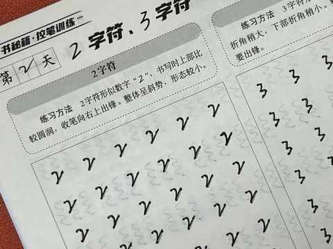
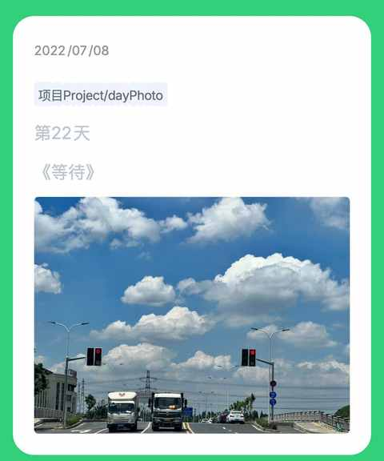
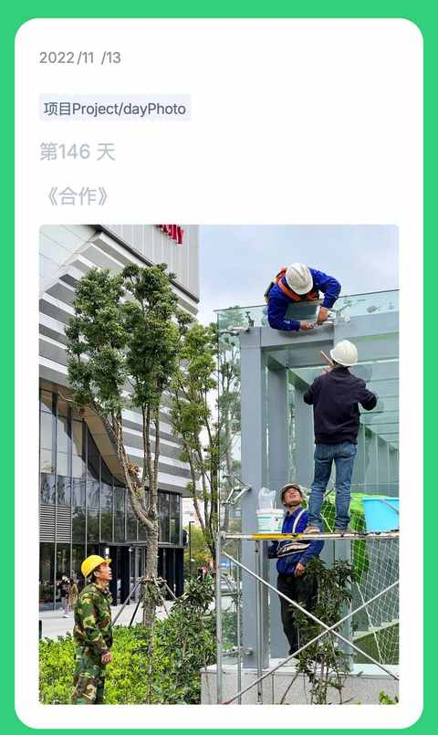
虽然难免会无聊，也需要用力地去找寻意义感，但还是要相信没有白走的路，有些事情是必须亲身体验才可以。
二、经济压力
这方面相对还行，第一是老婆还是正常上班的，其次是我虽然不上班但还是有工作任务要处理，不过整体收入依然是有显著下滑。
一种选择对应着多重取舍多重收获，必须跳出既要又要还要的漩涡。
三、社交隔离
对于一名资深 i 人，完全没有这方面的困扰，但换个角度去想，人是社会型动作，不管内向还是外向，上班或者不上班，社交都是刚需。
不上班和少量的工作意味着认识新朋友的概率大大减少，好在有定期参加小区的篮球活动，也比较多的上网冲浪，不会错过各种时下热点，随时可以和打工人畅聊。
四、自我提升
关于提升自我的内容，在之前的文章里面有详细表述。
当中年男人不知道做什么的时候……
核心是两个点：
虽然当下还未想清楚具体做的事情，但有两个事情一定要做，第一个是保持赚钱，第二个是强身健体。
也买过课，想学习视频剪辑之类的使用技能，但买过之后发现学不进去，也不能去实践。
后续调整为增大输入量，通过短视频、中视频、长视频、看文章、看书等形式进行。
当下正在写的文章也是一次输出的练习，希望能用输出倒逼输入，从而带动自己去做进一步思考。
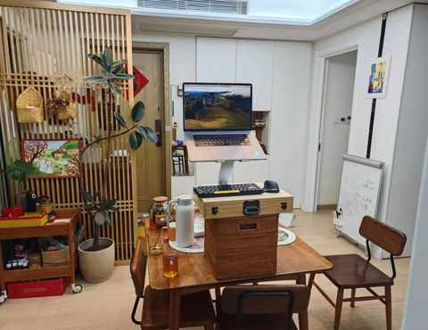
*简易的站立办公工作台
五、家庭关系
再延展下，其实表述为亲密关系也未尝不可，亲密关系涵盖的范围会更广，即便是不上班也会需要花时间和精力去维护好这些关系。
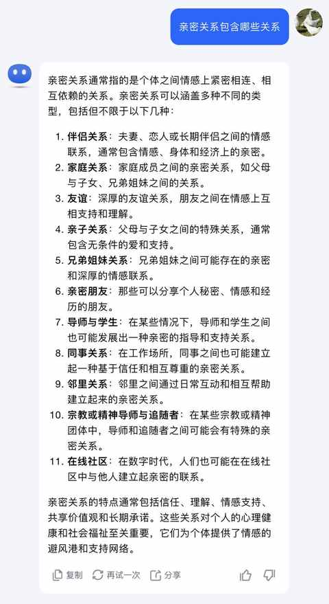
整体都是在螺旋式上升的状态，在不同的年龄，不同的人生阶段有很多亲密关系相关的母题无法逃避，唯有勇敢承担起属于自己的责任之后，才能更好的应对。
六、健康问题
目前是比较健康的状态，具体要看后面体检之后的数据了，不过从体脂秤的数据来看都在正常范围。
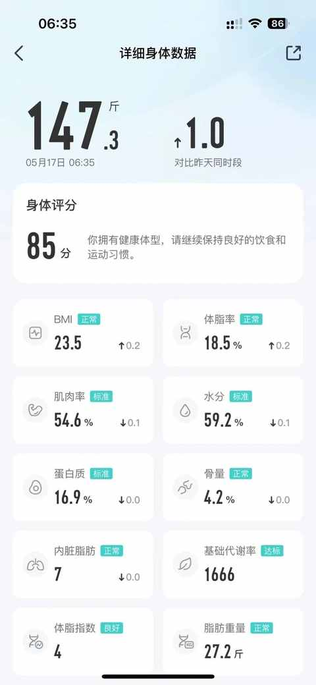
刚开始不上班时候的身体评分是刚刚 60 分，体重也是历史新高的，足足有 186.5 斤。
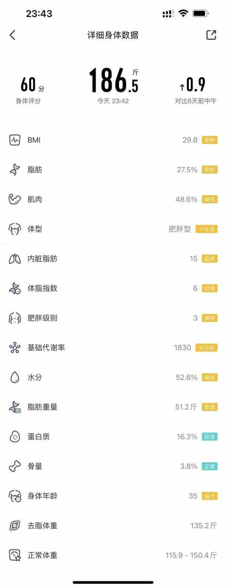
减重相关的看这篇：
关于体重从 91kg 到 75kg这件小事
跑步 相关的看这篇：
跑步新手，一年600 km跑量的感受分享
健身 相关的看这篇：
中年健身小白，半年54 次私教课的感受分享
最近在看不少播客主播和自媒体博主都在推荐的书：《超越百岁》。
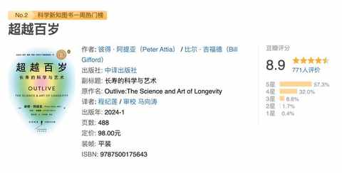
今天看的章节内容正好就是涉及到运动对于长寿的益处。
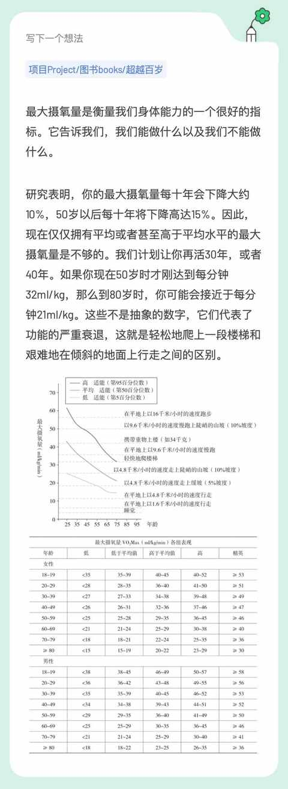
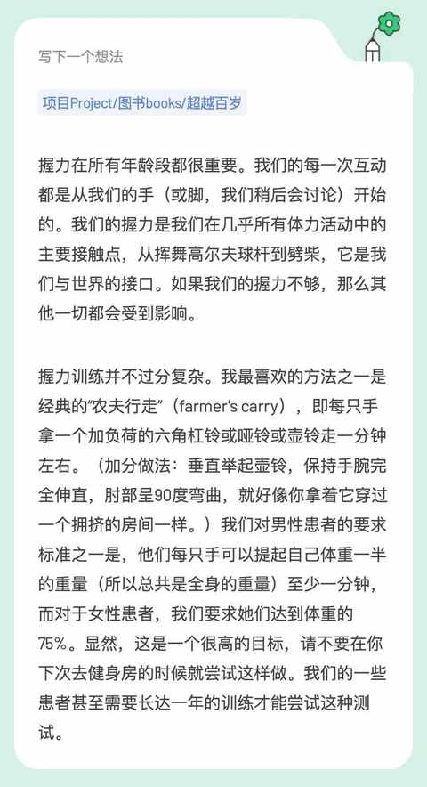
七、职业发展
上班是不可能的了，已经难以想象且不想再次经历职场中的各种束缚，职业上也就没有什么追求与念想，因为选择的是与职场截然不同的路线。
现在的状态也能称之为：只工作不上班！
保持工作的同时会继续寻找能 all in 去做 3-5 年的业务。
八、心理状态
心理状态还行，还是和20 多岁的时候一样，遇到事情会先想到积极的一面。
经历过刚开始的自我怀疑和落差感，适应了之后就能越来越自洽，虽然无聊会相伴左右，刷手机的时间也没有变少，在这期间心理学相关的书籍看的也不少，收获良多。
不过收获归收获，“书中得来终觉浅，绝知此事要躬行”，中年人总难免会有 emo 的时刻，会有介于开心与不开心之间的状态，这种时候运动或者独处下也就自动好了。
九、社会认同
没有这方面的困扰，可能也是家里的采购大多由我来完成，小区的快递员和我都挺熟，在小区遇到都会打个招呼。
日常的参与感满满，也会时不时去逛逛商场，去咖啡馆和书店之类的。
十、重新定位
对应文章的标题：迷雾正在开 散 。
重新定位尚在进行中，能零星的有一些想法从脑海中跳出来，但还不能串成一条线，也不能很有逻辑和系统的去表达，不过没关系，还有充足的时间。
现在回想起来去年对我影响最大的一本书必须是：《财务自由之路》。
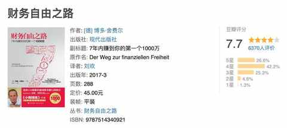
且用当时摘录的一句话作为本文的结尾：
责任不能再委托给别人了，我们必须重新展示对自己生活 的责任。
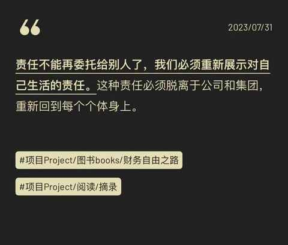